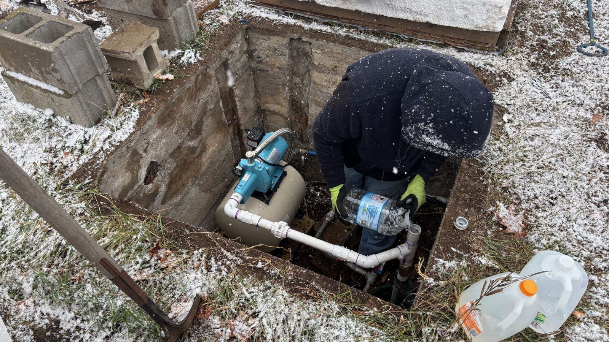

Referenser
Ett urval av uppdrag vi har utfört.
- 2026

Brf Vallbyhöjden
Nya tappvatten- och avloppsstammar, nya badrum och el i våtrum i två etapper.
- 2025

Villa på Djäkneberget
Sekelskiftesvilla där vi bevarade det gamla golvbrunnsläget och gjorde nytt badrum i kalkputs och terrazzo.
- 2025

Brf Kopparlunden
Nya liners i 48 lägenheters spillvattenstammar på tre veckor, medan kaklet fick sitta kvar.
- 2024

Gård utanför Kärrbo
Oljepannan ersattes med en 17 kW bergvärmepump och två borrhål på 180 meter.
- 2024

Bostads AB Köpingshus
Löpande rörservice i 640 hyreslägenheter med fast svarstid på 48 timmar.
- 2025

Radhus i Hökåsen
Läcka i bjälklaget – rivning, uttorkning och nytt badrum klart på sju veckor.
Kunder som kommit tillbaka
Gunilla H. · Västerås”De bytte våra stammar 1987 och nu gjorde de relining i samma hus. Montören hade med sig Lars gamla ritningar.”
Johan och Petra K. · Skultuna”Badrummet blev klart en dag före utsatt tid, och fredagssmsen gjorde att vi aldrig behövde undra.”
Ali R. · Köping”Vi har haft Brodins på service i sex år. De kommer när de säger och fakturorna är begripliga.”